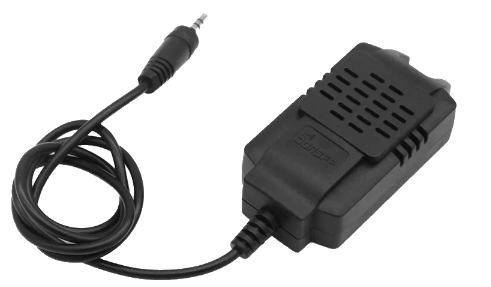
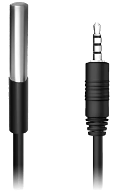
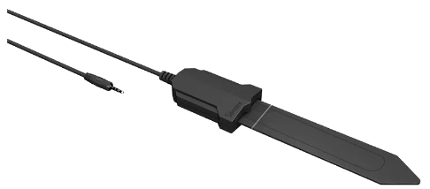

Sensores
Los sensores son dispositivos que nos permiten comunicarle a nuestros
dispositivos inteligentes en estado del mundo exterior, para que estos mediante automatizaciones
previamente configuradas puedan generar acciones físicas, como por ejemplo disparar un sistema de
riego si la humedad de suelo está por debajo del nivel indicado, o encender una luz al sensar la
apertura de una puerta, etc.
A continuación expondremos los sensores disponibles.
DW2 WIFI

Sensor magnético de apertura de puerta / ventana de la marca Sonoff, este sensor nos permite conocer
el estado de cualquier abertura de nuestro hogar. Puede notificar al teléfono la apertura o cierre y
se pueden generar automatismos con el cambio de estado. Es completamente inalámbrico, ya que es
operado mediante dos pilas AAA. Tiene notificacion de baja batería. Es capaz de almacenar todas las
aperturas y cierre de los últimos 90 días. Su uso está indicado únicamente para el interior. No
necesitamos de ninguna fijación mecánica gracias a la cinta doble contacto de 3M. Funciona con
e-WLink +IFTTT, con la posibilidad de preguntar tanto a google como a alexa en qué estado se
encuentra la abertura sensada.
SI7021

Sensor de temperatura y humedad de la marca Sonof, es capaz de medir temperaturas de entre -10ºC
hasta 85ºC (+- 0.4ºC)y humedad entre 0 al 80% (+- 3%), cuenta con cable de 50cm para poder lograr
una mejor ubicación del mismo. Lo podemos conectar al switch TH16 directamente, su uso es de
interior.
DS18B20

Sensor de temperatura sumergible de acero inoxidable de la marca Sonoff, es capaz de medir
temperatura en
un rango de -55ºC a 125ºC, cuenta cable de 1 metro de largo, se conecta sin intermediarios al switch
TH16.
MS01

Sensor de humedad de suelo de la marca Sonoff, puede medir entre 0 a 100% de humedad relativa,
operando en ambientes entre los 0ºC a 60ºC, gracias a su protección IP55 está protegido de los
elementos. Cuenta con un cable de 50cm que puede ser extendido hasta los 10m con el accesorio AL560,
su conexión se realiza al switch TH16, pudiendo generar automatismos para un sistema de riego.